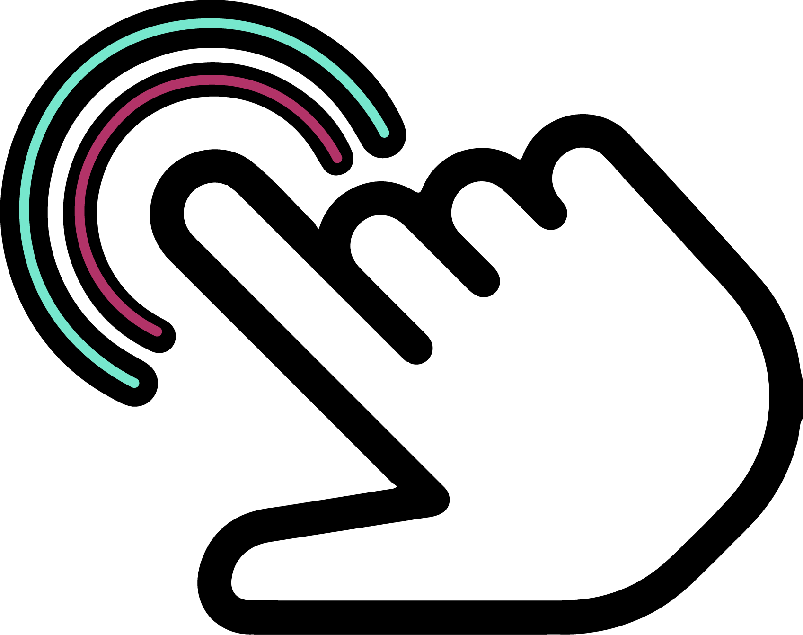
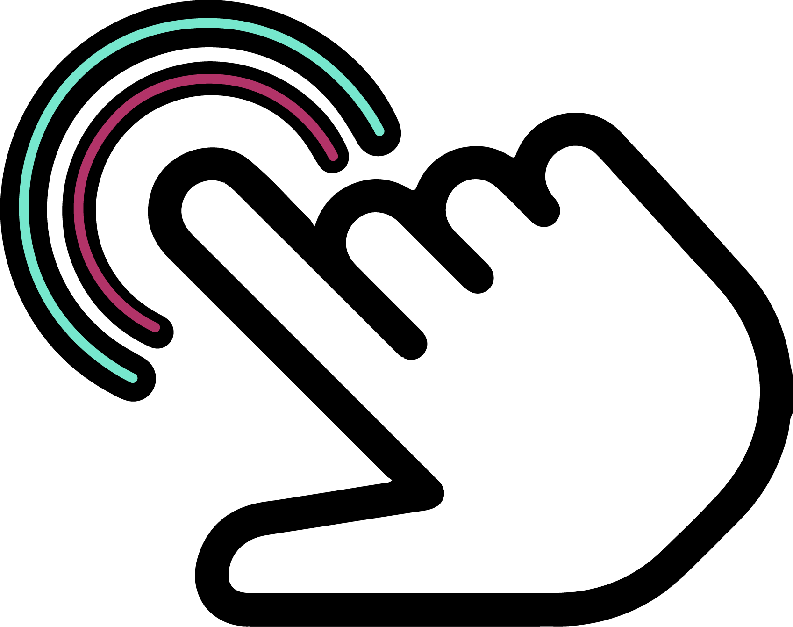

GGDB - Good Game Database
GGDB was created as my final Capstone Project in the Web and Mobile App Development program at NIC. The goal was to create an informative video game discovery application where you can find game details, reliable game reviews, and stay up to date on trends.
GGDB implements node/express to dynamically generate and/or inject video game data from multiple API sources. It has been created with responsiveness in mind and is equally accessible on computers, tablets and mobile devices.
Full Case Study available at: https://learndigital.dev/students/reeve-jarvis/